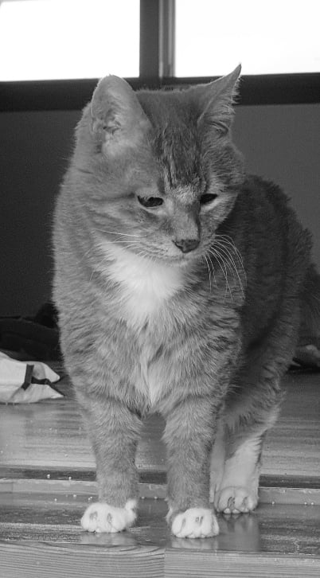
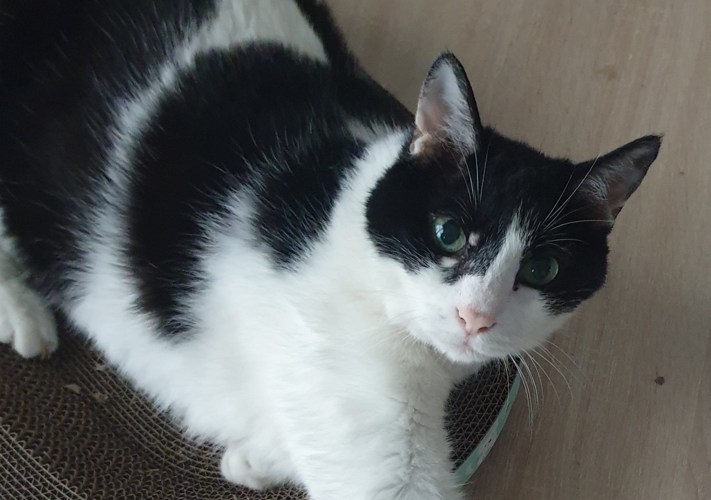

故 댕댕이 20살

故 단또 20살

17살인데 쌩쌩한 현 단또
한마리까진 임마가 장수체질이겠거니 했는데
그냥 내가 존나 잘키움
故 댕댕이 20살

故 단또 20살

17살인데 쌩쌩한 현 단또
한마리까진 임마가 장수체질이겠거니 했는데
그냥 내가 존나 잘키움
대단하군
어케 관리해?? 우리집 고앵이 14살인데 점프도 잘하고 밥도 잘먹고 물도 잘먹고 엄청 건강하긴한데 하루하루가 피말려..
우리집도 16살인데 너랑같은상황
걍 후회없을만큼 충분히 사랑해줘. 하루에 한번이라도 더 쓰다듬어주고.
나도 키워주셈
故 개붕이 (20살)
드루이드구만
67살임? 한 10살때부터 키웠을테닌깐
존경합니다
너와 함께해서 행복한 시간들이었을거야.
먹이를 어케 주는겨
드루이드 개붕이는 개추야
나도....
고양이 양치는 어케시켰음?? 너무 싫어하는데 억지로 시키면 스트레스 받는게 악영향을 미칠 것 같은데 어떻게해야할까??
이거 나도 궁금하다
베스트 : 아깽이때부터 잇몸만지기훈련?이랑 양치시켜서 익숙하게 만들어주기
차선책 : 칫솔 치약 츄르 준비 양치시키고 바로 츄르 주입(바로 주는거 중요)-> 무한반복
이거 밖에 없슴
복 받을거야
너의 마음은 괜찮니
님 춘추가ㅡ?
번식함?
우리집 개는 두번다 새끼 4~5번 정도 낳아서 그런지
13년 정도 살고 가던데 뭐 행복했겠지
동물사랑꾼 ㄷㄷ
안타깝다. 최근에 고양이가 일찍 죽는 원인인 신장 치료제가 막 개발됬다고 들었는데, 지금 노령묘흘 키우는 집사들은 그 혜택을 못받고 고양이는 단명하겠지.
지랄 개 ㄴㄴ 그냥 유전자임
전문확대범이네
사람 수명이 늘듯 애완 동물들도 영양상태, 의료상태가 개선되어서 수명이 늘었다고 하더라 ....
고양이 길바닥에서 줍어서 키우는대 7마리.
어뜨키키워 매일 아침저녁놀아주고 간식은 이나바껏만 사료는 로얄캐닌이랑 힐스 주고 모래 3주마다 전체갈이해줘 뭐더해야지 20년같이살까
20년만...? 알았다...